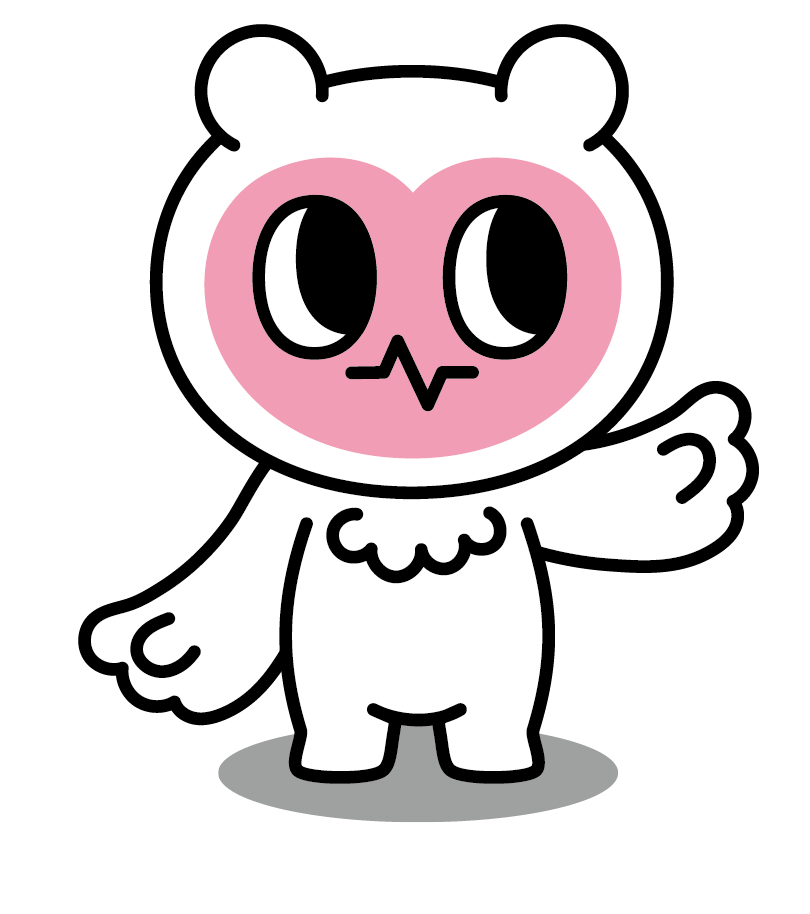
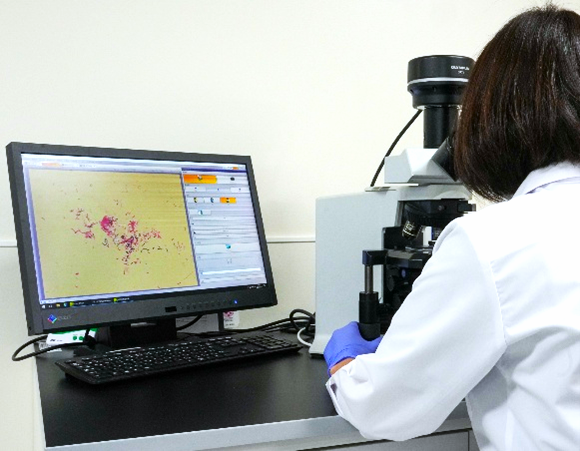
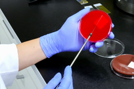
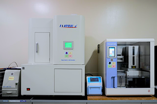
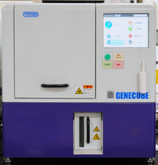
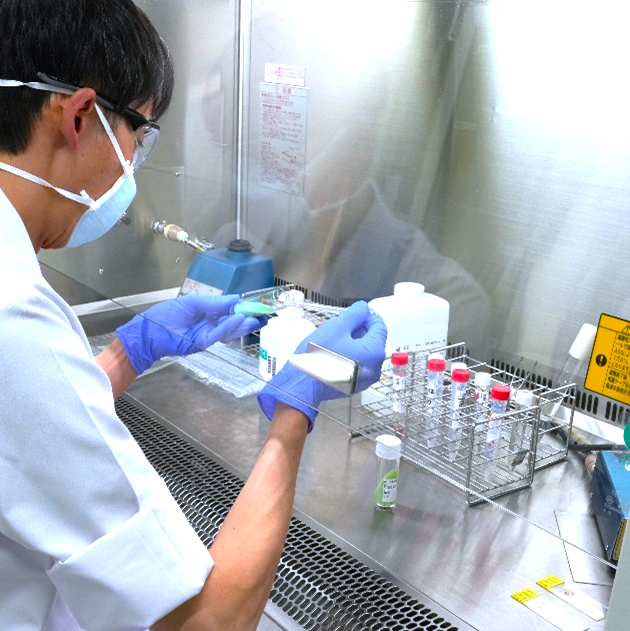

Infectious Disease Testing

検体をスライドガラスに塗布し染色した後、顕微鏡で菌体や白血球などの細胞成分を確認する検査です。菌の有無や形態、量を迅速に報告し、感染症の原因菌や炎症の程度を把握することで初期治療に役立てます。

検体を専用の培地に塗布し、菌の有無やどのような菌が発育するか確認するのが培養検査、発育した菌の名前を決めることを同定検査といいます。

微生物感受性検査分析装置IA40MIC-i
培養検査で発育した菌がどの抗菌薬（抗生物質）に効果があるかを確認します。この結果をもとに医師は治療薬を選択することになるため、非常に重要な検査です。

遺伝子解析装置GENECUBE
微生物の遺伝子を検出し、感染症の原因菌やウイルスを迅速に調べる検査です。培養が困難な病原体の検出や、早期診断にも役立ちます。当院では抗酸菌（結核菌など）やマイコプラズマ、百日咳菌などの遺伝子検査を実施しています。

結核菌や非結核性抗酸菌（NTM）を、塗抹検査・培養検査・PCRによって調べる検査です。抗酸菌の中には、発育するまでに数週間を要するものもあるため、塗抹検査やPCR検査を適切に活用し、迅速な結果報告に努めています。
抗菌薬適正使用支援チーム（AST）、感染制御チーム（ICT）のメンバーの一員としても活動しています。塗抹・培養・同定・薬剤感受性試験の結果を正確かつ迅速に提供し、感染症の原因菌や薬剤耐性の状況を明らかにすることで、適切な抗菌薬選択を支援します。また、検出菌の傾向や耐性菌の動向を継続的に監視し、院内感染対策や抗菌薬使用状況の改善に役立つ情報を提供します。